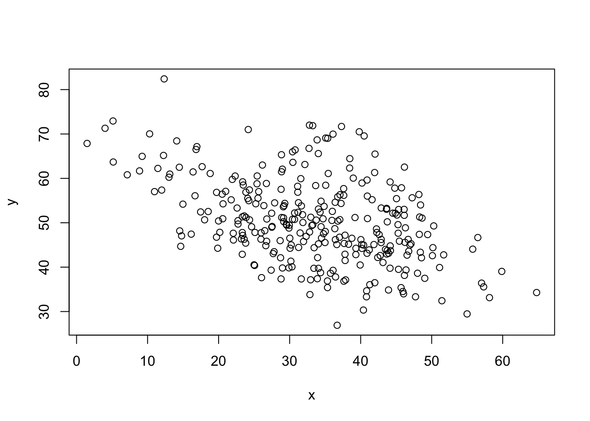

data =read.csv('data/dataset.csv')head = dataclass(data)
[1] "data.frame"
x = data$anxietyy= data$flexibilityplot(x, y)

summary(data)
anxiety flexibility mindfulness activity
Min. : 1.483 Min. :26.91 Length:300 Length:300
1st Qu.:25.977 1st Qu.:44.24 Class :character Class :character
Median :33.922 Median :49.56 Mode :character Mode :character
Mean :33.418 Mean :50.34
3rd Qu.:41.974 3rd Qu.:56.32
Max. :64.775 Max. :82.41
Listing 1 illustrates a basic use of the function plot()
Equation 1 illustrates how to standardize a value \[
z = \frac{x_i - \bar{x}}{s}
\tag{1}\]
library(ggplot2)#| out-width: 80% #| fig-align: right #| fig-cap: A graph from `mtcars`#| fig-cap-location: bottom#| label: fig-mtcars1ggplot(mtcars, aes(hp, mpg, color =factor(am))) +geom_point() +geom_smooth(formula = y ~ x, method ="loess") +theme(legend.position ='bottom')
ggplot2 is an R (R Core Team 2025) package developed by (Wickham 2016). Epifania, Anselmi, and Robusto (2024) published an interesting paper on Linear Mixed Effects Models.
R Core Team. 2025. R: A Language and Environment for Statistical Computing. Vienna, Austria: R Foundation for Statistical Computing. https://www.R-project.org/.
Wickham, Hadley. 2016. Ggplot2: Elegant Graphics for Data Analysis. Springer-Verlag New York. https://ggplot2.tidyverse.org.
Epifania, Ottavia M, Pasquale Anselmi, and Egidio Robusto. 2024. “A Guided Tutorial on Linear Mixed-Effects Models for the Analysis of Accuracies and Response Times in Experiments with Fully Crossed Design.”Psychological Methods. https://doi.org/https://doi.org/10.1037/met0000708.